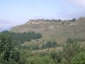
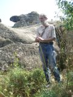
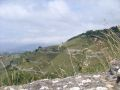

Страницы авторов "Тёмного леса"
Литературный Кисловодск и окрестности
Пишите нам! temnyjles@narod.ru



Хокинг. Краткая история времени - от Большого взрыва до черных дыр
Происхождение человека (Дольник)
Откровение (1985 г.)
Поезд (1988 г.)
Дурак (1988 г.)
Романс для подворотни (1989 г.)
страница Ильи Миклашевского на proza.ru
страница Ильи Миклашевского на stihi.ru
страница Ильи Миклашевского на сайте samlib.ru (журнал "Самиздат")
страница Ильи Миклашевского на mail.ru
страница Ильи Миклашевского на Facebook
страница Ильи Миклашевского на "В контакте"
страница Ильи Миклашевского на typhlo.narod.ru
Старый сайт Ильи Миклашевского
Рубайат Ильи Миклашевского в Библиотеке Максима Мошкова
Интервью Марии Макашенец с Ильей Миклашевским
написать Илье Миклашевскому: i.miklaszewski@yandex.ru
Последнее изменение страницы 17 Sep 2022